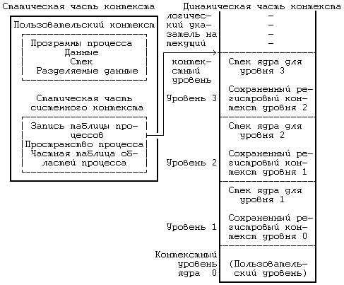

Контекст процесса включает в себя содержимое адресного пространства задачи, выделенного процессу, а также содержимое относящихся к процессу аппаратных регистров и структур данных ядра. С формальной точки зрения, контекст процесса объединяет в себе пользовательский контекст, регистровый контекст и системный контекст (*). Пользовательский контекст состоит из команд и данных процесса, стека задачи и содержимого совместно используемого пространства памяти в виртуальных адресах процесса. Те части виртуального адресного пространства процесса, которые периодически отсутствуют в оперативной памяти вследствие выгрузки или замещения страниц, также включаются в пользовательский контекст.
Регистровый контекст состоит из следующих компонент:
- Счетчика команд, указывающего адрес следующей команды, которую будет выполнять центральный процессор; этот адрес является виртуальным адресом внутри пространства ядра или пространства задачи.
- Регистра состояния процессора (PS), который указывает аппаратный статус машины по отношению к процессу. Регистр PS, например, обычно содержит подполя, которые указывают, является ли результат последних вычислений нулевым, положительным или отрицательным, переполнен ли регистр с установкой бита переноса и т.д. Операции, влияющие на установку регистра PS, выполняются для отдельного процесса, потому-то в регистре PS и содержится аппаратный статус машины по отношению к процессу. В других имеющих важное значение подполях регистра PS указывается текущий уровень прерывания процессора, а также текущий и предыдущий режимы выполнения процесса (режим ядра/задачи). По значению подполя текущего режима выполнения процесса устанавливается, может ли процесс выполнять привилегированные команды и обращаться к адресному пространству ядра.
- Указателя вершины стека, в котором содержится адрес следующего элемента стека ядра или стека задачи, в соответствии с режимом выполнения процесса. В зависимости от архитектуры машины указатель вершины стека показывает на следующий свободный элемент стека или на последний используемый элемент. От архитектуры машины также зависит направление увеличения стека (к старшим или младшим адресам), но для нас сейчас эти вопросы несущественны.
- Регистров общего назначения, в которых содержится информация, сгенерированная процессом во время его выполнения. Чтобы облегчить последующие объяснения, выделим среди них два регистра - регистр 0 и регистр 1 - для дополнительного использования при передаче информации между процессами и ядром.
Системный контекст процесса имеет "статическую часть" (первые три элемента в нижеследующем списке) и "динамическую часть" (последние два элемента). На протяжении всего времени выполнения процесс постоянно располагает одной статической частью системного контекста, но может иметь переменное число динамических частей. Динамическую часть системного контекста можно представить в виде стека, элементами которого являются контекстные уровни, которые помещаются в стек ядром или выталкиваются из стека при наступлении различных событий. Системный контекст включает в себя следующие компоненты:
- Запись в таблице процессов, описывающая состояние процесса (раздел 6.1) и содержащая различную управляющую информацию, к которой ядро всегда может обратиться.
- Часть адресного пространства задачи, выделенная процессу, где хранится управляющая информация о процессе, доступная только в контексте процесса. Общие управляющие параметры, такие как приоритет процесса, хранятся в таблице процессов, поскольку обращение к ним должно производиться за пределами контекста процесса.
- Записи частной таблицы областей процесса, общие таблицы областей и таблицы страниц, необходимые для преобразования виртуальных адресов в физические, в связи с чем в них описываются области команд, данных, стека и другие области, принадлежащие процессу. Если несколько процессов совместно используют общие области, эти области входят составной частью в контекст каждого процесса, поскольку каждый процесс работает с этими областями независимо от других процессов. В задачи управления памятью входит идентификация участков виртуального адресного пространства процесса, не являющихся резидентными в памяти.
- Стек ядра, в котором хранятся записи процедур ядра, если процесс выполняется в режиме ядра. Несмотря на то, что все процессы пользуются одними и теми же программами ядра, каждый из них имеет свою собственную копию стека ядра для хранения индивидуальных обращений к функциям ядра. Пусть, например, один процесс вызывает функцию creat и приостанавливается в ожидании назначения нового индекса, а другой процесс вызывает функцию read и приостанавливается в ожидании завершения передачи данных с диска в память. Оба процесса обращаются к функциям ядра и у каждого из них имеется в наличии отдельный стек, в котором хранится последовательность выполненных обращений. Ядро должно иметь возможность восстанавливать содержимое стека ядра и положение указателя вершины стека для того, чтобы возобновлять выполнение процесса в режиме ядра. В различных системах стек ядра часто располагается в пространстве процесса, однако этот стек является логически-независимым и, таким образом, может помещаться в самостоятельной области памяти. Когда процесс выполняется в режиме задачи, соответствующий ему стек ядра пуст.
- Динамическая часть системного контекста процесса, состоящая из нескольких уровней и имеющая вид стека, который освобождается от элементов в порядке, обратном порядку их поступления. На каждом уровне системного контекста содержится информация, необходимая для восстановления предыдущего уровня и включающая в себя регистровый контекст предыдущего уровня.
(*) Используемые в данном разделе термины "пользовательский контекст" (user-level context), "регистровый контекст" (register context), "системный контекст" (system-level context) и "контекстные уровни" (context layers) введены автором.
Ядро помещает контекстный уровень в стек при возникновении прерывания, при обращении к системной функции или при переключении контекста процесса. Контекстный уровень выталкивается из стека после завершения обработки прерывания, при возврате процесса в режим задачи после выполнения системной функции, или при переключении контекста. Таким образом, переключение контекста влечет за собой как помещение контекстного уровня в стек, так и извлечение уровня из стека: ядро помещает в стек контекстный уровень старого процесса, а извлекает из стека контекстный уровень нового процесса. Информация, необходимая для восстановления текущего контекстного уровня, хранится в записи таблицы процессов.
На Рисунке 6.8 изображены компоненты контекста процесса. Слева на рисунке изображена статическая часть контекста. В нее входят: пользовательский контекст, состоящий из программ процесса (машинных инструкций), данных, стека и разделяемой памяти (если она имеется), а также статическая часть системного контекста, состоящая из записи таблицы процессов, пространства процесса и записей частной таблицы областей (информации, необходимой для трансляции виртуальных адресов пользовательского контекста). Справа на рисунке изображена динамическая часть контекста. Она имеет вид стека и включает в себя несколько элементов, хранящих регистровый контекст предыдущего уровня и стек ядра для текущего уровня. Нулевой контекстный уровень представляет собой пустой уровень, относящийся к пользовательскому контексту; увеличение стека здесь идет в адресном пространстве задачи, стек ядра недействителен. Стрелка, соединяющая между собой статическую часть системного контекста и верхний уровень динамической части контекста, означает то, что в таблице процессов хранится информация, позволяющая ядру восстанавливать текущий контекстный уровень процесса.

Рисунок 6.8. Компоненты контекста процесса
Процесс выполняется в рамках своего контекста или, если говорить более точно, в рамках своего текущего контекстного уровня. Количество контекстных уровней ограничивается числом поддерживаемых в машине уровней прерывания. Например, если в машине поддерживаются разные уровни прерываний для программ, терминалов, дисков, всех остальных периферийных устройств и таймера, то есть 5 уровней прерывания, то, следовательно, у процесса может быть не более 7 контекстных уровней: по одному на каждый уровень прерывания, 1 для системных функций и 1 для пользовательского контекста. 7 уровней будет достаточно, даже если прерывания будут поступать в "наихудшем" из возможных порядков, поскольку прерывание данного уровня блокируется (то есть его обработка откладывается центральным процессором) до тех пор, пока ядро не обработает все прерывания этого и более высоких уровней.
Несмотря на то, что ядро всегда исполняет контекст какого-нибудь процесса, логическая функция, которую ядро реализует в каждый момент, не всегда имеет отношение к данному процессу. Например, если возвращая данные, дисковое запоминающее устройство посылает прерывание, то прерывается выполнение текущего процесса и ядро обрабатывает прерывание на новом контекстном уровне этого процесса, даже если данные относятся к другому процессу. Программы обработки прерываний обычно не обращаются к статическим составляющим контекста процесса и не видоизменяют их, так как эти части не связаны с прерываниями.
Предыдущая глава || Оглавление || Следующая глава